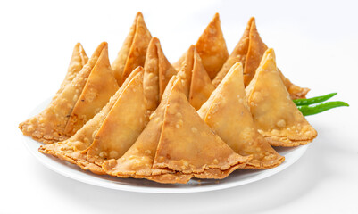

| નાસ્તાની રેસીપી |
શાક બનાવવાની રેસીપી |
ગુજરાતી રોટલા |
ગુજરાતી ફરસાણ |
ગુજરાતી સ્વીટ |
ઠંડા પીણા |
ગુજરાતી વાનગીઓ |
| 
સમોસા
બનાવવો સમોસા બાર જેવા સ્વદ સાથે
|
 ઢોકળા
એક દમ પોચા ઢોકળા બનાવો ઘરે
ઢોકળા
એક દમ પોચા ઢોકળા બનાવો ઘરે
|
 રોટલો
ગામડા ના સ્વાદ વાલો રોટલો
રોટલો
ગામડા ના સ્વાદ વાલો રોટલો
|
ગુજરાતી ભોજન એટલે ભારત, પાકિસ્તાન અને વિશ્વમાં ગમેતે સ્થળે વસતા ગુજરાતી લોકોનું ભોજન, જેઓની પશ્ચિમ ભારત અને દક્ષિણ પાકિસ્તાન (મોટા ભાગે સિંધ)માં બહુમતી છે.આ ભોજન પ્રાથમિક રીતે શાકાહારી હોય છે. એક શુદ્ધ ગુજરાતી થાળીમાં રોટલી, શાક, ભાત કે ખીચડી, દાળ કે કઢી હોયજ છે. આ ભોજન સ્વાદ અને ગરમીની બાબતે ઘણું વિશાળ હોય છે, જેનો આધાર દરેક કુટુંબની સ્વાદની પસંદગી અને તેઓ ગુજરાતનાં કયા પ્રદેશ સાથે સંબંધ ધરાવે છે તે પર આધારીત હોય છે. ઉત્તર ગુજરાત, કચ્છ-કાઠિયાવાડ, મધ્ય ગુજરાત અને દક્ષિણ ગુજરાત આ ચાર ગુજરાતનાં મુખ્ય વિભાગો છે જે દરેક પોતાની અલગ ભોજન શૈલી ધરાવે છે. ઘણી ગુજરાતી વાનગી એકજ સમયે ગળી, ખારી અને તમતમતી મસાલેદાર સ્વાદ ધરાવતી પણ હોઇ શકે છે. ગુજરાતી ભોજન ક્યારેક વધુ પડતું તૈલી હોય છે.
|
ગુજરાતી વાંગી ના ફાયદા
>. કોઈપણ ટોચની શાકાહારી રેસ્ટોરન્ટમાં તમે ગુજરાતી વાનગીઓ શા માટે શોધી શકો છો તેનું એક સૌથી મોટું કારણ એ છે કે તેમાં અપાર પોષક મૂલ્ય છે. આ વાનગીઓ સંપૂર્ણપણે સ્વાસ્થ્યવર્ધક ઘટકોથી બનેલી છે અને અભ્યાસના અહેવાલો છે કે આ શાકાહારી વાનગીઓ તમારા સ્વાસ્થ્યને પુષ્કળ ફાયદા પહોંચાડે છે.
>. ગુજરાતી વાનગીઓ હળવી હોય છે છતાં તે તમારા પેટને લાંબા સમય સુધી ભરી શકે છે. તેથી, રેસ્ટોરન્ટમાં લોકપ્રિય ગુજરાતી વાનગીઓ ખાધા પછી તમને “ઓહ, હું હવે ભરાઈ ગયો છું!” એવું કદી ભારે નહીં લાગે. લાગણીનો પ્રકાર. તેનો અર્થ એ કે તે તમારી ભૂખ પૂરી કરવાનો હેતુ પૂરો કરે છે પરંતુ ખોરાક તમને દરેક રીતે ઊર્જાવાન બનાવશે. આ બધું કામ કરવા અને સ્વાસ્થ્ય જાળવવા માટે ગુજરાતી વાનગીઓને એક આદર્શ ખોરાક વિકલ્પ બનાવે છે.
>. મીઠાઈઓ અને મીઠાઈઓ એ ટોચની ગુજરાતી વાનગીઓની શ્રેણીઓમાંની એક છે જે લોકોને વધુ ભોજન લીધા પછી એક અદ્ભુત લાગણી અનુભવે છે. ગુજરાતી મીઠાઈઓ અને મીઠાઈઓમાં ખાદ્યપદાર્થો પુષ્કળ પ્રમાણમાં છે. આનો ઉપયોગ મૂળભૂત રીતે ત્યારે થાય છે જ્યારે તે તહેવાર, પ્રસંગ અને સમારોહ હોય. મીઠાઈ એ ક્ષણને આનંદ સાથે માણવા માટે પવિત્ર સંકેતનું પ્રતીક છે.
>. જો તમારી પાસે શિવમ રેસ્ટોરન્ટ જેવી શ્રેષ્ઠ ભારતીય શાકાહારી રેસ્ટોરન્ટમાંથી ગુજરાતી થાળી હોય, તો તમે તમારી જાતને ખાણીપીણીના સ્વર્ગની જગ્યાએ શોધી શકો છો. ગુજરાતી થાળીને પૌષ્ટિક ભોજન તરીકે ગણવામાં આવે છે જે તમારા શરીરના દરેક પોષણની ખાલીપો ભરી દે છે. આ જ મુખ્ય કારણ છે કે ગુજરાતી થાળી વિશ્વભરમાં લોકપ્રિય છે.
|